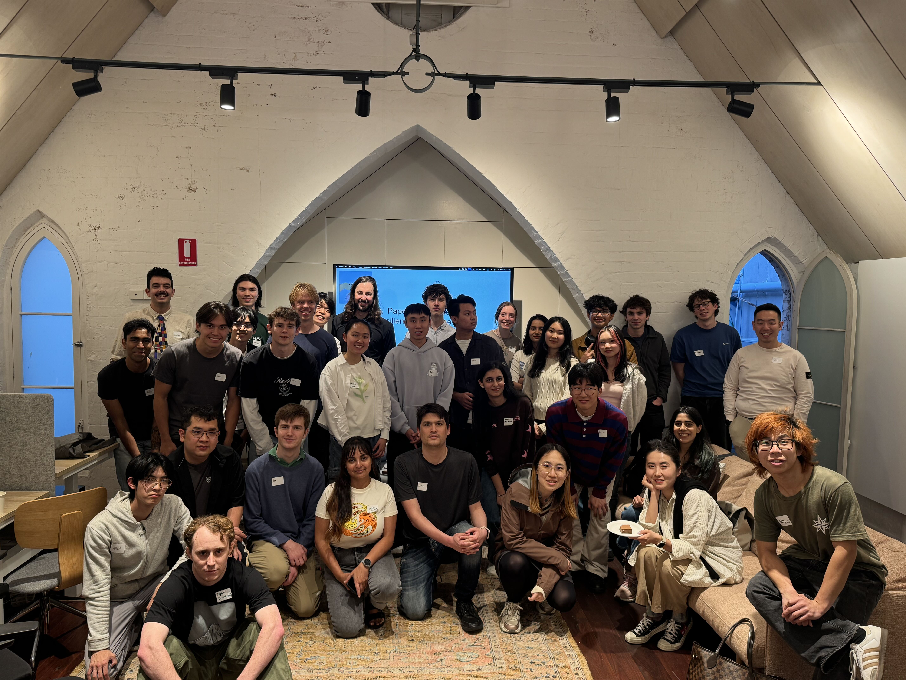

A record of what we've talked about. Click a session to see what we explored and anything worth reading beforehand (or after).
AI is advancing rapidly, but society may not be ready for what's coming. Could AI trigger a crisis, and what can we do to prepare? At our first Paperclips event, we explored these questions through an introductory briefing, conversations with AI safety professionals, and an interactive wargame.

What we did
The event brought together students from different academic backgrounds to think about the societal implications of increasingly capable AI systems. No prior knowledge of AI was needed.